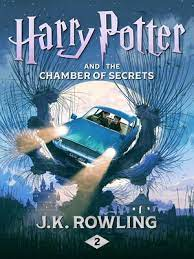

Harry Potter and the Philosopher's Stone
Ten-year-old Harry Potter is an orphan who lives in the fictional London suburb of Little Whinging, Surrey, with the Dursleys: his uncaring Aunt Petunia, loathsome Uncle Vernon, and spoiled cousin Dudley. The Dursleys barely tolerate Harry, and Dudley bullies him. One day Harry is astonished to receive a letter addressed to him in the cupboard under the stairs (where he sleeps). Before he can open the letter, however, Uncle Vernon takes it. Letters for Harry subsequently arrive each day, in increasing numbers, but Uncle Vernon tears them all up, and finally, in an attempt to escape the missives, the Dursleys go to a miserable shack on a small island. On Harry’s 11th birthday, a giant named Hagrid arrives and reveals that Harry is a wizard and that he has been accepted at the Hogwarts School of Witchcraft and Wizardry. He also sheds light on Harry’s past, informing the boy that his parents, a wizard and a witch, were killed by the evil wizard Voldemort and that Harry acquired the lightning-bolt scar on his forehead during the fatal confrontation.Harry Potter and the Chamber Of Secret
Ten-year-old Harry Potter is an orphan who lives in the fictional London suburb of Little Whinging, Surrey, with the Dursleys: his uncaring Aunt Petunia, loathsome Uncle Vernon, and spoiled cousin Dudley. The Dursleys barely tolerate Harry, and Dudley bullies him. One day Harry is astonished to receive a letter addressed to him in the cupboard under the stairs (where he sleeps). Before he can open the letter, however, Uncle Vernon takes it. Letters for Harry subsequently arrive each day, in increasing numbers, but Uncle Vernon tears them all up, and finally, in an attempt to escape the missives, the Dursleys go to a miserable shack on a small island. On Harry’s 11th birthday, a giant named Hagrid arrives and reveals that Harry is a wizard and that he has been accepted at the Hogwarts School of Witchcraft and Wizardry. He also sheds light on Harry’s past, informing the boy that his parents, a wizard and a witch, were killed by the evil wizard Voldemort and that Harry acquired the lightning-bolt scar on his forehead during the fatal confrontation.Harry Potter and the Prizoner Of Azkaban
Ten-year-old Harry Potter is an orphan who lives in the fictional London suburb of Little Whinging, Surrey, with the Dursleys: his uncaring Aunt Petunia, loathsome Uncle Vernon, and spoiled cousin Dudley. The Dursleys barely tolerate Harry, and Dudley bullies him. One day Harry is astonished to receive a letter addressed to him in the cupboard under the stairs (where he sleeps). Before he can open the letter, however, Uncle Vernon takes it. Letters for Harry subsequently arrive each day, in increasing numbers, but Uncle Vernon tears them all up, and finally, in an attempt to escape the missives, the Dursleys go to a miserable shack on a small island. On Harry’s 11th birthday, a giant named Hagrid arrives and reveals that Harry is a wizard and that he has been accepted at the Hogwarts School of Witchcraft and Wizardry. He also sheds light on Harry’s past, informing the boy that his parents, a wizard and a witch, were killed by the evil wizard Voldemort and that Harry acquired the lightning-bolt scar on his forehead during the fatal confrontation.
